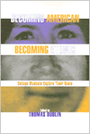
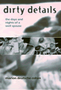
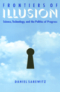
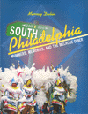
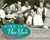

|
|
Applications
of Feminist Legal Theory to Women's Lives
Sex, Violence, Work, and Reproduction
Weisberg,
D. Kelly, ed.
A comprehensive survey of the applications of feminist legal
theory to specific areas of the law
1200 pp • 7x10 • Spring 1996
paper 1-56639-424-4
EAN 978-1-56639-424-6
cloth 1-56639-423-6
EAN 978-1-56639-423-9
|
|
|
Bachelors
of Science
Seventeenth Century Identity, Then and Now
Zack,
Naomi
A revolutionary look at the intellectual and social mileu within
which early modern philosophers invented scientific identities
264 pp • 6x9 • Spring 1996
paper 1-56639-436-8
EAN 978-1-56639-436-9
cloth 1-56639-435-X
EAN 978-1-56639-435-2
|
| 
|
Becoming
American, Becoming Ethnic
College Students Explore Their Roots
Dublin,
Thomas
Personal reflections on the challenges that face college students
coming to understand their ethnicity in contemporary America
256 pp • 6x9 • Spring 1996
paper 1-56639-439-2
EAN 978-1-56639-439-0
cloth 1-56639-438-4
EAN 978-1-56639-438-3
|
| 
|
Brooklyn!
An Illustrated History
Snyder-Grenier, Ellen M.A colorful history of Brooklyn, its
monuments, and residents
304 pp • 8x10 • Spring 1996
cloth 1-56639-408-2
EAN 978-1-56639-408-6
|
|
|
Building
America
The Democratic Promise of Public Work
Boyte,
Harry C., and Nancy N. Kari
A look to the revival of public-spirited work as a key to the
rebirth of democracy
272 pp • 5.5x8.25 • Spring 1996
paper 1-56639-458-9
EAN 978-1-56639-458-1
cloth 1-56639-457-0
EAN 978-1-56639-457-4
|
|
|
The
Business of Practicing Law
The Work Lives of Solo and Small-Firm Attorneys
Seron,
Carroll S.
A compelling portrait of the dilemmas and work lives of solo
and small-firm attorneys
240 pp • 6x9 • Spring 1996
paper 1-56639-407-4
EAN 978-1-56639-407-9
cloth 1-56639-406-6
EAN 978-1-56639-406-2
|
|
|
A
Case About Amy
Smith,
Robert C., and Frank G. Bowe
An inspirational and telling story about a family's struggle
to get equal educational opportunity for their deaf daughter
344 pp • 6x9 • Spring 1996
paper 1-56639-412-0
EAN 978-1-56639-412-3
cloth 1-56639-411-2
EAN 978-1-56639-411-6
|
|
|
The
Cleveland Indians Encyclopedia
Schneider,
Russell
Everything you wanted to know about the Indians from 1869 to
1995
584 pp • 9x12 • Spring 1996
cloth 1-56639-405-8
EAN 978-1-56639-405-5
|
|
|
Community
Builders
A Tale of Neighborhood Mobilization in Two Cities
Rabrenovic,
Gordana
Addressing relevant urban issues, a careful look at the relationships
between neighborhood associations and development
248 pp • 6x9 • Spring 1996
paper 1-56639-410-4
EAN 978-1-56639-410-9
cloth 1-56639-409-0
EAN 978-1-56639-409-3
|
| 
|
Dirty
Details
The Days and Nights of a Well Spouse
Cohen,
Marion Deutsche, and Marty Wngaarden Krauss
Caring for her disabled husband, Marion Cohen tells her story
from the viewpoint of a Well Spouse
224 pp • 5.5x8.25 • Spring 1996
paper 1-56639-426-0
EAN 9781-56639-426-0
cloth 1-56639-425-2
EAN 978-1-56639-425-3
|
|
|
El
Salvador in the Eighties
Counterinsurgency and Revolution by Ucles, Mario Lungo
Ucles,
Mario Lungo, Arthur Schmidt, and Amelia F. Shogan
An in-depth examination of Salvadoran insurgency and the U.S.-backed
counterinsurgency in the 1980s
256 pp • 5.5x8.25 • Spring 1996
paper 1-56639-432-5
EAN 978-1-56639-432-1
cloth 1-56639-431-7
EAN 978-1-56639-431-4
|
|
|
Family
and Gender Among American Muslims
Issues Facing Middle Eastern Immigrants And Their Decendants
Aswad,
Barbara C., and Barbara Bilge
Diverse perspectives and groundbreaking research on gender and
family issues affecting Muslim communities throughout North America
344 pp • 6x9 • Spring 1996
paper 1-56639-443-0
EAN 978-1-56639-443-7
cloth 1-56639-442-2
EAN 978-1-56639-442-0
|
| 
|
Frontiers
of Illusion
Science, Technology, and the Politics of Progress
Sarewitz,
Daniel R.
An incisive argument for fostering stronger links between the
interests of society and progress in science
256 pp • 6x9 • Spring 1996
paper 1-56639-416-3
EAN 978-1-56639-416-1
cloth 1-56639-415-5
EAN 978-1-56639-415-4
|
|
|
Health
Care Reform and the Battle for the Body Politic
Beauchamp,
Dan E.
Health care reform as a strategy for dealing with the failures
of politics
224 pp • 5.5x8.25 • Spring 1996
paper 1-56639-414-7
EAN 978-1-56639-414-7
cloth 1-56639-413-9
EAN 978-1-56639-413-0
|
|
|
Human
Attachment
Colin,
Virginia L.
The first and only comprehensive introduction to one theory in
personality development
416 pp • 6.5x9.25 • Spring 1996
cloth 1-56639-459-7
EAN 978-1-56639-459-8
|
|
|
I
Remember Julia
Voices of the Dissapeared
Carlson,
Eric Stener
A powerful and moving remembrance of a young doctor who was disappeared
during the Argintine "Dirty War"
240 pp • 5.5x8.25 • Spring 1996
paper 1-56639-437-6
EAN 978-1-56639-437-6
cloth 1-56639-430-9
EAN 978-1-56639-430-7
|
|
|
Just
a Temp
Henson,
Kevin D.
Notes from the fringe of the modern economy
224 pp • 5.5x8.25 • Spring 1996
paper 1-56639-386-8
EAN 978-1-56639-386-7
cloth 1-56639-385-X
EAN 978-1-56639-385-0
|
|
|
Lost
Talent
Women in the Sciences
Hanson,
Sandra L.
Tackling the important questions about women's experiences in
science and mathematics that previous research has left unanswered
240 pp • 6x9 • Spring 1996
cloth 1-56639-446-5
EAN 978-1-56639-446-8
|
|
|
Medicaid
and the Limits of State Health Reform
Sparer,
Michael S.
A critical look at state-dominated health care
248 pp • 5.5x8.25 • Spring 1996
paper 1-56639-434-1
EAN 978-1-56639-434-5
cloth 1-56639-433-3
EAN 978-1-56639-433-8
|
|
|
Mickey
Mouse History and Other Essays on American Memory
Wallace,
Michael
A long-awaited dispatch from the history front in today's culture
war
336 pp • 6x9 • Spring 1996
paper 1-56639-445-7
EAN 978-1-56639-445-1
cloth 1-56639-444-9
EAN 978-1-56639-444-4
|
|
|
Myths
About the Powerless
Contesting Social Inequalities
Lykes,
M. Brinton, Ali Banuazizi, Ramsay Liem, Michael Morris, and George
W. Albee, eds.
Exposing the assumptions about issues at the center of our national
debate
416 pp • 6x9 • Spring 1996
paper 1-56639-422-8
EAN 978-1-56639-422-2
cloth 1-56639-421-X
EAN 978-1-56639-421-5
|
|
|
Nature's
Keeper
Wenz,
Peter S.
A thought-provoking look at the value of not making separations
between humans and nature
240 pp • 5.5x8.25 • Spring 1996
paper 1-56639-428-7
EAN 978-1-56639-428-4
cloth 1-56639-427-9
EAN 978-1-56639-427-7
|
| 
|
Orphanages
Reconsidered
Child Care Institutions in Progressive Era Baltimore
Zmora,
Nurith
A provocative re-examination of the ways private orphanages cared
for children in need
New in Paperback!
256 pp • 6x9 • Fall 1993
paper 1-56639-465-1
EAN 978-1-56639-465-9
|
|
|
Philadelphia's
Old Ballparks
Westcott,
Rich
"An old ballpark has an allure that cannot be dismissed. It evokes
warm memories while suggesting another era when baseball was a
kinder, gentler game. One cannot simply forget it. It's grip is
far to strong."
224 pp • 7x10 • Spring 1996
cloth 1-56639-454-6
EAN 978-1-56639-454-3
|
|
|
The
Philippine Temptation
Dialectics of Philippines-U.S. Literary Relations
San Juan,
Jr., E.
A passionate discussion of the history of oppositional writing
in the Philippines
320 pp • 6x9 • Spring 1996
paper 1-56639-418-X
EAN 978-1-56639-418-5
cloth 1-56639-417-1
EAN 978-1-56639-417-8
|
| 
|
Polka
Happiness
Keil,
Charles, Angeliki V. Keil, and Dick Blau
Interviews and photographs celebrate America's rollicking polka
culture
New in Paperback!
288 pp • 8x10 • Fall 1992
paper 1-56639-462-7
EAN 978-1-56639-462-8
|
|
|
The
Protection Racket State
Elite Politics, Military Extortion, and Civil War in El Salvador
Stanley,
William
A chilling examination into why states kill
344 pp • 6x9 • Spring 1996
paper 1-56639-392-2
EAN 978-1-56639-392-8
cloth 1-56639-391-4
EAN 978-1-56639-391-1
|
|
|
Regarding
Animals
Arluke,
Arnold, and Clinton R. Sanders
Questioning our conflicting views of the role of animals
256 pp • 5.5x8.25 • Spring 1996
paper 1-56639-441-4
EAN 978-1-56639-441-3
cloth 1-56639-440-6
EAN 978-1-56639-440-6
|
| 
|
South
Philadelphia
Mummers, Memories, and the Melrose Diner
Dubin,
Murray
A guided tour of Philadelphia's quintessential neighborhood from
the days of Thomas Jefferson to the night Palumbo's burned
248 pp • 8.5x11 • Spring 1996
cloth 1-56639-429-5
EAN 978-1-56639-429-1
|
| 
|
Swing
Era New York
The Jazz Photographs of Charles Peterson
Stokes,
W. Royal, Don Peterson, and Stanley Dance
An intimate look at the teeming world of New York Swing in the
'20s and '30s
New in Paperback!
232 pp • 10x8 • Fall 1994
paper 1-56639-464-3
EAN 978-1-56639-464-2
|
| 
|
The
Whiz Kids and the 1950 Pennant
Roberts,
Robin, C. Paul Rogers III, and Pat Williams
The story of the astounding Whiz Kids told by Hall-of-Famer Robin
Roberts
390 pp • 6x9 • Spring 1996
cloth 1-56639-466-X
EAN 978-1-56639-466-6
|
| 
|
William
Henry Jackson and the Transformation of the American Landscape
Hales,
Peter Beacon
An examination of the work of "the world's most famous landscape
photographer"
New in Paperback!
368 pp • 11x8.5 • Spring 1988
paper 1-56639-463-5
EAN 978-1-56639-463-5
|
|
|
Women
Reading Women Writing
Self-Invention in Paula Gunn Allen, Gloria Anzaldúa, and
Audre Lorde
Keating,
Ann Louise
An examination of the work of three "out" lesbians of color and
the ways they negotiate their private, public, and political worlds
256 pp • 5.2x8.25 • Spring 1996
paper 1-56639-420-1
EAN 978-1-56639-420-8
cloth 1-56639-419-8
EAN 978-1-56639-419-2
|